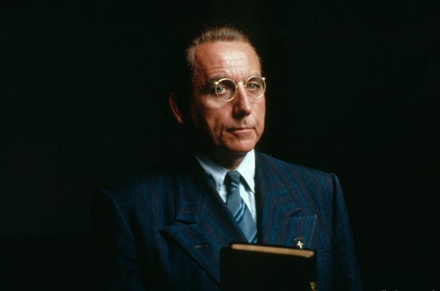
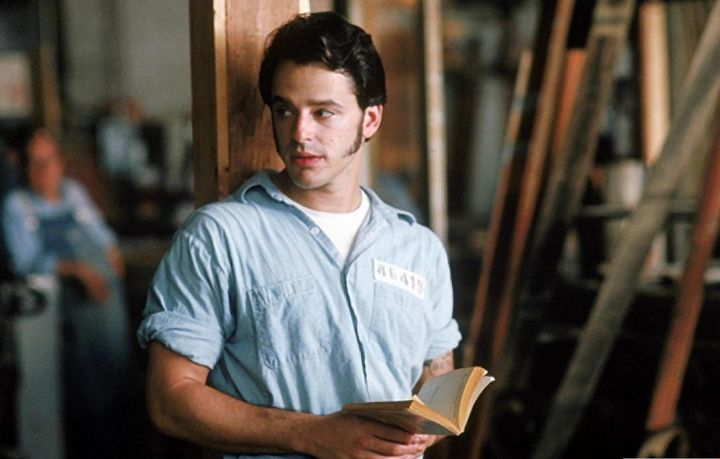
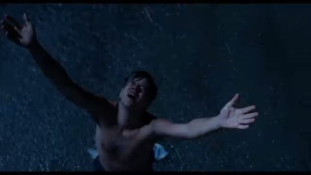
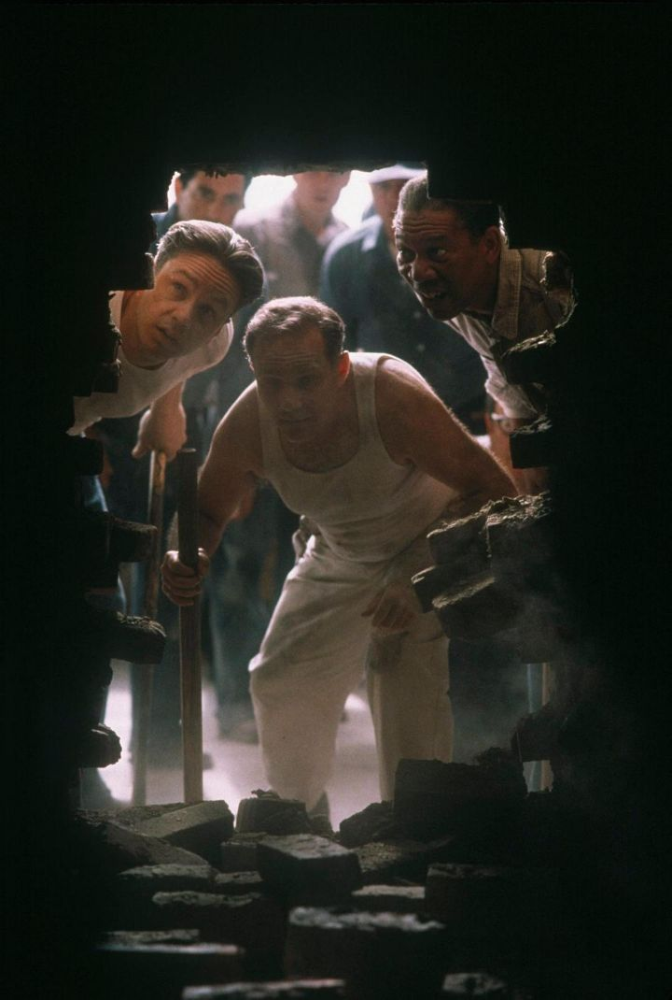
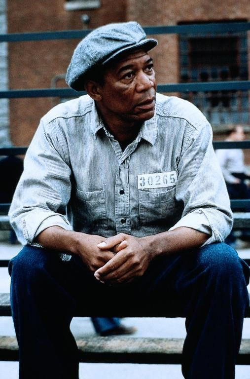

诺顿典狱长最后一次打开保险箱，想取出的是那本记满黑钱的假账。账本不在了，原处端端正正躺着一本圣经。扉页上有一行留言：亲爱的典狱长，你说得对——得救之道，就在其中。他翻下去，书页中间被挖出一个锤形的空洞，那把小小的凿石锤在里面睡了十九年；而空洞的起点，恰好是《出埃及记》。一部电影全部的反讽都收在这个道具里：在肖申克，圣经是空心的，里面藏的不是道，是工具；可这空洞偏偏从那卷讲百姓出离为奴之地的书开始凿起。电影知道自己在开一个多么锋利的玩笑。

玩笑是从头开的。新囚车驶进大门那天，诺顿向他们致辞：他只相信两样东西，纪律和圣经；信仰可以归上帝，人却归他管。然后每人发一本圣经。在肖申克，圣经出现的每一个场合，都不是被读的场合——它是训话的道具、查房的敲门砖、藏锤子的木匣。突击查房那天，诺顿从安迪手里拿过那本圣经，随口考问最喜欢的经文，安迪答："所以，你们要警醒；因为你们不知道家主什么时候来。"（马可福音 13:35）诺顿脱口报出章节，说他一向喜欢这句，但更偏爱另一句——"我是世界的光。跟从我的，就不在黑暗里走，必要得着生命的光"，安迪替他补上出处：约翰福音八章十二节。这场对经像一场击剑：把"世界的光"挂在嘴上的人，正把整座监狱经营成黑暗的作坊；而囚犯引的那句是警告——家主要来，时辰不定，你当警醒。临出牢门，诺顿把圣经从铁栏间递还："差点忘了，可不能夺了你这个。得救之道，就在其中。"他不知道自己说的是字面意义上的实话：那一刻，圣经里真的躺着安迪的"得救之道"。

诺顿办公室的墙上，挂着太太绣的一幅字："主的审判迅速降临。"绣字后面是保险箱，保险箱里是假账与黑钱。他让审判的警句替自己看守罪证，这几乎是对一节经文最工整的图解："有敬虔的外貌，却背了敬虔的实意。"（提摩太后书 3:5）所以当汤米——那个进出管教所长大、想考个文凭、笑起来还是孩子的年轻贼——带来足以翻案的证词时，诺顿的选择毫不意外：他先用禁闭安顿了安迪，再叫哈德利在深夜的院子里使这证词永远沉默，伪装成越狱。哈德利这个人不必多写：他在天台上为一笔遗产税愁眉苦脸的样子，和他在新囚犯入监第一夜抡开警棍的样子，是同一种人的两面——凶暴与贪婪原是近亲。至于肖申克更深处的恶，包格斯之流，电影拍了，这里不必复述。值得复述的是审判：多年之后，警笛真的在大门外响起，"迅速降临"四个字一字不差地应验，只是降临在绣它挂它的人头上——诺顿在那行绣字底下，用一颗子弹给自己结了案。
安迪是这座监狱里唯一的异质。蒙冤入狱，他却从不以纯然的无辜者自居——多年后他对瑞德承认，扳机虽不是他扣的，妻子却是被他一寸寸推远的；他不善表达的爱，先于子弹杀死了那桩婚姻。这份诚实是他与诺顿的分界线。他在墙内不断制造墙外的时刻：反锁广播室，让《费加罗的婚礼》的女声二重唱掠过操场，全监狱的人在阳光里仰头站住；在天台上用银行家的本事替哈德利省下税款，换来工友们清晨十点的冰啤酒——一群刷沥青的囚徒坐在屋顶上喝酒，恍如自由人，他自己不喝，靠在阴影里微笑。还有一间以老布命名的图书馆，一届一届考过文凭的年轻囚犯。然后是那件他为自己做的事：一把小锤，一张换过三任的女星海报，十九年，每晚几克石屑顺着裤管抖落在操场上。他从五百码的污水管道里爬出来，在闪电下张开双臂，让大雨把他冲洗干净。这是电影史上最像洗礼的镜头——只是这场洗礼里没有施洗的，只有受洗的自己。

瑞德是能替你弄到任何东西的人——香烟、海报、凿石锤——除了无罪。他自嘲是肖申克唯一有罪的人，这句玩笑是全片最诚实的一句话。假释文件上一次又一次落下"驳回"的章，他对着假释官背诵"改过自新"的标准答案，一背就是几十年。他也是对希望说狠话的人：希望是危险的东西，能把人逼疯。第四十年的听证会上，他不再背诵了，只说没有一天不后悔，想跟当年那个铸下大错的孩子谈谈，可那孩子早就不在了。章落下来，是"批准"。得救临到他的那一刻，恰是他停止表演得救的那一刻——这句话，值得为它停一停。
老布是这个故事替我们记下的另一种结局。五十年刑期把墙的形状刻进了他，用瑞德的话说，这叫体制化：起先你恨这些墙，然后习惯它们，最后离不开它们。1954 年他获假释，怀里的乌鸦放归天空，自己被放归人间——却在超市里手足无措，在夜里惊醒不知身在何处，最后在寄宿所的横梁上刻下"老布到此一游"，把自己挂了上去。海伍德那一圈老囚徒是希腊剧里的歌队，插科打诨，见证一切；老布是歌队里先退场的那一个。他的死为全片的救赎神话标出了底价：安迪式的自救需要地质学、会计学和十九年的耐心，而老布一样也没有。对他，"靠自己"的福音只有一句话可说——你不行。

于是必须回到片名。《肖申克的救赎》，救赎是谁做成的？是被救的人自己。安迪的救赎是一件手工制品，图纸、工期、工具一应俱全，从头到尾是第一人称单数的动词。作为电影，这是它最动人的地方；作为福音，这恰是它走不通的地方——因为肖申克里只有一个安迪，其余的人都是老布和瑞德。圣经讲的救赎，正是这个词的反面："你们得救是本乎恩，也因着信；这并不是出于自己，乃是神所赐的；也不是出于行为，免得有人自夸。"（以弗所书 2:8–9）不是里面的人凿穿了墙，是外面的那一位走进了监狱；他不越狱，他服刑——服的还是别人的刑。"因基督也曾一次为罪受苦，就是义的代替不义的，为要引我们到神面前。"（彼得前书 3:18）安迪穿过的污秽在管道里，基督担当的污秽在我们心里；安迪爬出去，救了自己，基督走进来，替了众人。

奇妙的是，电影自己无意间讲出了这第二种救赎——不在安迪的隧道里，在瑞德的巴克斯顿。瑞德不能自救：出狱后的他一步一步踏上老布的旧路，杂货店，廉价旅店，连窗外的铁栏都是自己心里长出来的。救他的不是他里面残存的什么，而是墙外来的一个应许：一片牧场，一道石墙，一块黑色的火山玻璃，玻璃底下一封信、一沓钱、一个地名。有人先他而去，为他预备了地方，又捎话来叫他去——福音书里，那位离席的主对门徒说的几乎是同样的话：他去，原是为他们预备地方，预备好了，必来接他们。瑞德得救靠的不是凿墙的力气，是信一封信的信；他违反假释条例登上去德州的巴士，在老布的刻字旁边添上"瑞德也来过"，然后头也不回。他一生犯了两次法：头一次出于血气，这一次，出于盼望。
安迪在信里写：希望是美好的事物，也许是人间至善，而美好的事物永不消逝。电影把这盼望的对象放在地图上——芝华塔尼欧，太平洋边的小镇。安迪说，墨西哥人讲，太平洋没有记忆。一个蒙冤半生、又自认负疚于亡妻的人，想去的不是没有围墙的地方，是没有记忆的水边；他要的其实不止是自由，是赦免。而圣经里恰好有一位这样说话的神："惟有我为自己的缘故涂抹你的过犯；我也不记念你的罪恶。"（以赛亚书 43:25）没有记忆的海只是自然的偶然，不记念罪的神却是恩典本身。影片结束在俯拍的海岸线上：白沙，蓝水，小船，两个老朋友的拥抱。这是电影所能想象的天堂，一幅借来的图像——人心里凡对"过犯被涂抹之地"的乡愁，都是对另一个海岸的乡愁。瑞德在巴士上说了一路"我希望"。福音的好消息是，这三个字可以不再是一场赌：得救之道确实就在其中，只是不在那本被挖空的圣经里。在没有被挖空的那一本里，救赎不是需要十九年去凿的名词，而是一个已经完成的动词，主语不是我们。就像安迪留给诺顿的那行字，只是这一次，再没有反讽——你说得对。得救之道，就在其中。